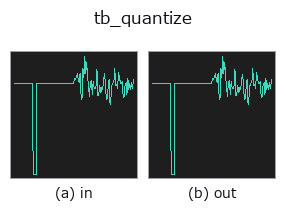

typed op• Datenarten: signal → signal
• Aufruf: fullseye.apply(img, "tb_quantize", a=0.5, b=0.5) (das 2-D-Modell ist ein Bild plus zwei skalare Regler a,b∈[0,1])

*Die Abbildung ist die tatsächliche Ausgabe auf einer synthetischen 128×128-Eingabe. Links Eingabe, rechts Ausgabe. Punktwolken als Draufsicht-Streudiagramm (Helligkeit = z), 1-D-Reihen als Linie, Volumen als Maximum-Projektion entlang z, Videos als mittleres Bild, komplexe Bilder als Betrag; Rückgabewerte, die kein Bild ergeben, werden als Werte gezeigt.*
Regler a durchfahren (0,1 / 0,5 / 0,9, der andere Regler auf Standard):
▸ tb_quantize: knob a sweep (docs site)
*Regler b ändert die Ausgabe nicht (gemessen: identisch bei 0,1 / 0,5 / 0,9).*
Stufen (die vorangehenden Ops → dieser Op, von links nach rechts):
▸ tb_quantize: stages (docs site)
Auf anderen Bildern (synthetische Szene / Foto / Münzen. Obere Reihe: Eingaben, untere Reihe: deren Ausgaben. Regler auf Standard):
▸ tb_quantize: other inputs (docs site)
Skalarer Quantisierer mit angegebenem Fehlermodell, optional mit Dither.
> Die ausführliche Beschreibung unten ist der Originaltext — Zusammenfassung und Überschriften sind übersetzt.
*bits* sets the number of levels `L = 2**bits` over the signal's own
min..max range. *mode* is `"round" (mid-tread, unbiased) or "truncate"`
(floor, the convention PIL's posterize and most fixed-point casts use).
The two differ by more than a rounding convention. With step
`Delta = range/(L-1) both have error variance Delta**2/12`, but
truncation also carries a mean of `-Delta/2`, so its mean square error is
truncate: Delta2/12 + (Delta/2)2 = Delta**2/3
round: Delta**2/12
— a factor of 4. Anything that measures a level (not just displays it)
must round.
*dither* adds noise before quantising so the error stops being a function
of the signal: `"tpdf"` (triangular, the audio standard — two uniform draws
summed, so the error's variance no longer depends on the sample value) or
`"rpdf"` (one uniform draw). Dither raises the total error power but removes
the correlation that makes quantisation audible as distortion rather than as
hiss. `seed` fixes the draw so the op stays deterministic.
Applicability. (1) The range is taken from *this* signal, so two signals
quantised separately do not share a scale. (2) `bits=1` with no dither is a
comparator, not a quantiser — the error model does not apply. (3) The error
model assumes the signal moves by more than a step between samples; on a flat
stretch the error is a constant offset, not noise.
Typed bridge of the 1d op `quantize into the 2-D evolution registry: the same implementation, called under the op(v, a, b) convention. a drives bits (default 8); b` is unused.
• Katalog der Beispieldaten (Download-URLs / Lizenzen) — 2-D nutzt skimage.data (BSD/Public Domain) plus synthetische Bilder, 3-D nennt Download-URLs echter Datenquellen (Stanford, PDS, …).
• Herkunft und Literatur der Operatoren — die Quellen der Forschung/Verfahren, auf denen diese Operatorfamilie beruht.
Das Programm unten ist nachweislich lauffähig (gleiche Eingabe wie die Abbildung). In der Studio-Hilfe wird dieser Block zu Schaltflächen, die es sofort laden und ausführen.
img_to_signal 0.50 0.50 tb_quantize 0.50 0.50
▸ Load this pipeline · Load & run
Die folgenden Beispiele rufen den zugrunde liegenden Ledger-Op quantize auf. Dieser Brücken-Op ist dieselbe Implementierung, angepasst an die Konvention fn(v, a, b); das Verhalten gilt unverändert (nur die Aufrufform unterscheidet sich).
• poc_cold_chain_excursion — py -3.11 examples/poc_cold_chain_excursion.py
signal als Eingabe)identity · tb_create_funct_1d_array · tb_smooth_funct_1d_gauss · tb_smooth_funct_1d_mean · tb_derivate_funct_1d · tb_integrate_funct_1d · tb_zero_crossings_funct_1d · tb_abs_funct_1d
typed)tb_points_to_voxel · tb_estimate_point_normals · tb_iss_keypoints · tb_project_points · tb_render_point_depth · tb_statistical_outlier_removal · tb_radius_outlier_removal · tb_voxel_grid_downsample
*Provenance: ops.py — 2D Operator-Registry. Diese Notiz wird von tools/opdocs.py md erzeugt (nicht von Hand bearbeiten).*
© 2026 Kazufumi Furuse — Fullseye operator documentation. Licensed under Apache-2.0.
{kind=link}
{kind=link}
{kind=link}